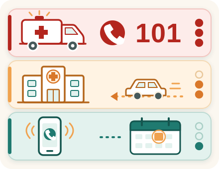

Смотрите видео
После операции: тревожные признаки
Сразу звоните 101 (Маген Давид Адом)

- внезапная одышка, боль в груди, кашель с кровью — возможен тромб в лёгких (CDC);
- потеря сознания, судороги, резкая спутанность сознания;
- сильное кровотечение из раны, которое не останавливается при прижатии;
- стопа или нога внезапно стала холодной, бледной или синюшной, особенно при сильной боли, новом онемении или слабости — возможно, нарушен кровоток (Society for Vascular Surgery);
- после операции на шее: быстро нарастающий отёк шеи, затруднённое дыхание или внезапная невозможность проглотить слюну (Cambridge University Hospitals).
Немедленно в приёмное отделение
- После операции на позвоночнике новая или быстро нарастающая слабость или онемение в руке или ноге, онемение в области половых органов, между ног или вокруг заднего прохода (область «седла»), невозможность помочиться или новая потеря контроля над мочевым пузырём или кишечником требуют немедленного обследования в приёмном отделении. Не ждите планового осмотра или ответа отделения. При быстром ухудшении состояния или невозможности безопасно добраться самостоятельно вызывайте 101. (Источник: Guy's and St Thomas' NHS)
- Резко усилившаяся боль, которая не проходит от назначенных обезболивающих, или нога приняла непривычное положение.
Свяжитесь с отделением или обратитесь к врачу в тот же день
- Новая боль, отёк, покраснение или ощущение тепла в области икры или бедра, особенно с одной стороны, — возможен тромб в вене ноги. Нужна срочная оценка врачом в тот же день; если это невозможно — обратитесь в приёмное отделение (CDC; NICE NG89; NICE NG158).
- Если температура достигла 38 °C или выше, сохраняется либо повторяется, или появился озноб, свяжитесь с оперировавшим отделением или обратитесь за медицинской помощью в тот же день. При ухудшении общего состояния обращайтесь за помощью независимо от цифры на термометре (AAOS).
- Нарастающее покраснение, жар, отёк или болезненность вокруг раны, гнойные или необычные выделения, стойкое промокание повязки, неприятный запах либо расхождение краёв раны требуют осмотра в тот же день (AAOS; NICE NG125).
Что нормально в первые дни
Умеренная боль, небольшой отёк и синяк вокруг раны обычно бывают после операции и постепенно уменьшаются. Если сомневаетесь — позвоните в отделение.
Рана и профилактика тромбов
- Не снимайте и не меняйте повязку самостоятельно, если отделение не дало иных указаний. Возможность принимать душ зависит от типа повязки и состояния раны. Выполняйте рекомендации, указанные при выписке (NICE NG125).
- Если вам назначили препараты против тромбов или компрессионные чулки, соблюдайте схему из выписки. Не отменяйте препараты самостоятельно. Если чулки вызывают боль, выраженное сдавление, пузыри или изменение цвета кожи, прекратите их использование и немедленно свяжитесь с медицинским персоналом. При использовании чулок ежедневно осматривайте кожу (NICE NG89).
- Двигайтесь и ходите так, как вам рекомендовали.
Источники
- Guy's and St Thomas' NHS, Recovering from lumbar spine decompression or discectomy
- AAOS, After Your Joint Replacement Surgery
- NICE NG125, Surgical site infections: prevention and treatment
- NICE NG89, Venous thromboembolism in over 16s
- CDC, About Venous Thromboembolism (Blood Clots)
- Маген Давид Адом — 101
Это общая информация. Индивидуальные указания лечащего врача имеют приоритет над рекомендациями на этой странице.
צפו בסרטון
אחרי הניתוח: סימני אזהרה
התקשרו מיד ל־101 (מגן דוד אדום)
- קוצר נשימה פתאומי, כאב בחזה, שיעול עם דם — ייתכן קריש דם בריאות (CDC);
- אובדן הכרה, פרכוסים, בלבול חריף;
- דימום חזק מהפצע שאינו נעצר בלחיצה;
- כף רגל או רגל שהופכת פתאום קרה, חיוורת או כחלחלה, בעיקר עם כאב חזק, חוסר תחושה חדש או חולשה — ייתכן שזרימת הדם חסומה (Society for Vascular Surgery);
- אחרי ניתוח בצוואר: נפיחות בצוואר שמתגברת במהירות, קושי בנשימה או חוסר יכולת פתאומי לבלוע רוק (Cambridge University Hospitals).
גשו מיד למיון
- אחרי ניתוח בעמוד השדרה, חולשה או חוסר תחושה חדשים או מחמירים במהירות בזרוע או ברגל, חוסר תחושה סביב איברי המין, בין הרגליים או סביב פי הטבעת (אזור האוכף), חוסר יכולת להטיל שתן, או אובדן שליטה חדש על שלפוחית השתן או על המעיים מחייבים בדיקה מיידית במיון. אל תחכו לביקורת מתוכננת או לתשובה מהמחלקה. אם המצב מחמיר במהירות או שאינכם יכולים להגיע בבטחה בעצמכם — הזמינו 101. (מקור: Guy's and St Thomas' NHS)
- כאב שהתגבר מאוד ואינו חולף עם משככי הכאבים שנרשמו, או שהרגל במנח לא רגיל.
פנו למחלקה או לרופא באותו יום
- כאב חדש, נפיחות, אודם או חום בשוק או בירך, בעיקר בצד אחד — ייתכן קריש דם בווריד הרגל. יש לפנות להערכה רפואית דחופה באותו יום; אם זה לא אפשרי — פנו למיון (CDC; NICE NG89; NICE NG158).
- אם החום הגיע ל־38°C ומעלה, נמשך או חוזר, או שהופיעו צמרמורות — פנו למחלקה המנתחת או לעזרה רפואית באותו יום. אם המצב הכללי מחמיר, פנו לעזרה בלי קשר למספר במדחום (AAOS).
- אודם, חום, נפיחות או רגישות מתגברים סביב הפצע, הפרשה מוגלתית או חריגה, חבישה שנרטבת שוב ושוב, ריח לא נעים או פתיחת שולי הפצע — מחייבים בדיקה באותו יום (AAOS; NICE NG125).
מה תקין בימים הראשונים
כאב מתון, נפיחות קלה ושטף דם סביב הפצע שכיחים אחרי ניתוח ובדרך כלל פוחתים בהדרגה. אם אתם בספק — התקשרו למחלקה.
הפצע ומניעת קרישי דם
- אל תסירו ואל תחליפו את החבישה בעצמכם, אלא אם המחלקה הורתה אחרת. האפשרות להתקלח תלויה בסוג החבישה ובמצב הפצע. פעלו לפי הוראות השחרור (NICE NG125).
- אם נרשמו לכם תרופות נגד קרישים או גרבי לחץ, הקפידו על התוכנית שבמכתב השחרור. אל תפסיקו תרופות על דעת עצמכם. אם הגרביים גורמות לכאב, ללחץ חזק, לשלפוחיות או לשינוי בצבע העור — הפסיקו להשתמש בהן ופנו מיד לצוות הרפואי. בזמן השימוש בגרביים בדקו את העור מדי יום (NICE NG89).
- זוזו והלכו כפי שהומלץ לכם.
מקורות
זהו מידע כללי. להנחיות האישיות של הרופא המטפל יש עדיפות על ההמלצות בדף זה.
شاهدوا الفيديو
بعد العملية: علامات الخطر
اتصلوا فورًا بـ 101 (نجمة داود الحمراء)
- ضيق نفس مفاجئ، ألم في الصدر، سعال مع دم — قد تكون جلطة في الرئتين (CDC)؛
- فقدان الوعي، تشنجات، تشوش ذهني حاد؛
- نزيف شديد من الجرح لا يتوقف بالضغط؛
- قدم أو ساق تصبح فجأة باردة أو شاحبة أو زرقاء، خاصة مع ألم شديد أو خدر جديد أو ضعف — قد يعني ذلك انسداد تدفق الدم (Society for Vascular Surgery)؛
- بعد عملية في الرقبة: تورم في الرقبة يزداد بسرعة، أو صعوبة في التنفس، أو عدم القدرة المفاجئ على بلع اللعاب (Cambridge University Hospitals).
توجّهوا فورًا إلى الطوارئ
- بعد عملية في العمود الفقري، الضعف أو الخدر الجديد أو المتزايد بسرعة في الذراع أو الساق، أو الخدر حول الأعضاء التناسلية أو بين الفخذين أو حول فتحة الشرج (منطقة السرج)، أو عدم القدرة على التبول، أو الفقدان الجديد للتحكم بالمثانة أو الأمعاء — تتطلب فحصًا فوريًا في قسم الطوارئ. لا تنتظروا الفحص المخطط أو ردّ القسم. إذا تدهورت الحالة بسرعة أو لم تتمكنوا من الوصول بأمان بأنفسكم — اطلبوا 101. (المصدر: Guy's and St Thomas' NHS)
- ألم ازداد كثيرًا ولا يزول بالمسكنات الموصوفة، أو أصبحت الساق في وضع غير معتاد.
اتصلوا بالقسم أو راجعوا الطبيب في اليوم نفسه
- ألم جديد أو تورم أو احمرار أو سخونة في ربلة الساق أو الفخذ، خاصة في جهة واحدة — قد تكون جلطة في وريد الساق. يجب أن يقيّمكم طبيب بشكل عاجل في اليوم نفسه؛ وإذا تعذّر ذلك، توجّهوا إلى الطوارئ (CDC؛ NICE NG89؛ NICE NG158).
- إذا بلغت الحرارة 38°م أو أكثر، أو استمرت أو تكررت، أو ظهرت قشعريرة — اتصلوا بالقسم الذي أجرى العملية أو اطلبوا المساعدة الطبية في اليوم نفسه. عند تدهور الحالة العامة اطلبوا المساعدة بغض النظر عن قراءة الميزان (AAOS).
- ازدياد الاحمرار أو السخونة أو التورم أو الألم حول الجرح، إفرازات قيحية أو غير عادية، ابتلال الضماد بشكل متواصل، رائحة كريهة أو انفتاح حواف الجرح — تتطلب فحصًا في اليوم نفسه (AAOS؛ NICE NG125).
ما هو طبيعي في الأيام الأولى
الألم المعتدل والتورم الخفيف والكدمة حول الجرح شائعة بعد العملية وتقل تدريجيًا عادةً. إذا كنتم غير متأكدين — اتصلوا بالقسم.
الجرح والوقاية من الجلطات
- لا تنزعوا الضماد ولا تغيّروه بأنفسكم ما لم يعطكم القسم تعليمات أخرى. إمكانية الاستحمام تعتمد على نوع الضماد وحالة الجرح. اتبعوا التوصيات المذكورة عند الخروج (NICE NG125).
- إذا وُصفت لكم أدوية ضد الجلطات أو جوارب ضاغطة، التزموا بالخطة المذكورة في رسالة الخروج. لا توقفوا الأدوية من تلقاء أنفسكم. إذا سببت الجوارب ألمًا أو ضغطًا شديدًا أو فقاعات أو تغيّرًا في لون الجلد، توقفوا عن استعمالها واتصلوا فورًا بالطاقم الطبي. افحصوا الجلد يوميًا أثناء استعمال الجوارب (NICE NG89).
- تحركوا وامشوا كما أُوصي لكم.
المصادر
- Guy's and St Thomas' NHS, Recovering from lumbar spine decompression or discectomy
- AAOS, After Your Joint Replacement Surgery
- NICE NG125, Surgical site infections: prevention and treatment
- NICE NG89, Venous thromboembolism in over 16s
- CDC, About Venous Thromboembolism (Blood Clots)
- نجمة داود الحمراء — 101
هذه معلومات عامة. تعليمات طبيبكم المعالج الخاصة بحالتكم لها الأولوية على التوصيات الواردة في هذه الصفحة.
Watch the video
After Surgery: Warning Signs
Call 101 (Magen David Adom) right away
- sudden shortness of breath, chest pain, or coughing up blood — this may be a blood clot in the lung (CDC);
- loss of consciousness, seizures, or sudden severe confusion;
- heavy bleeding from the wound that does not stop when you press on it;
- a foot or leg that suddenly becomes cold, pale, or blue, especially with severe pain, new numbness, or weakness — this may mean that blood flow is blocked (Society for Vascular Surgery);
- after neck surgery: rapidly increasing neck swelling, difficulty breathing, or a sudden inability to swallow saliva (Cambridge University Hospitals).
Go to the emergency department (ER) immediately
- After spine surgery, new or rapidly worsening weakness or numbness in an arm or leg, numbness around the genitals, between the legs, or around the anus (saddle area), being unable to urinate, or new loss of bladder or bowel control must be checked immediately in an emergency department (ER). Do not wait for a scheduled visit or for a reply from the ward. If your condition is getting worse quickly, or you cannot get there safely on your own, call 101. (Source: Guy's and St Thomas' NHS)
- Pain that suddenly gets much worse and does not go away with the pain medicine you were prescribed, or your leg is in an unusual position.
Contact the ward or see a doctor the same day
- New pain, swelling, redness, or warmth in the calf or thigh, especially on one side — this may be a blood clot in a leg vein. You need an urgent medical assessment the same day; if that is not possible, go to the emergency department (CDC; NICE NG89; NICE NG158).
- If your temperature reaches 38 °C or higher, stays high or keeps coming back, or you have chills, contact the ward where you had your operation or get medical care the same day. If you are feeling worse overall, get help no matter what the thermometer says (AAOS).
- Redness, heat, swelling, or tenderness around the wound that is getting worse, pus or unusual discharge, a dressing that keeps soaking through, a bad smell, or the edges of the wound coming apart all need to be examined the same day (AAOS; NICE NG125).
What is normal in the first few days
Moderate pain, and slight swelling and bruising around the wound, are common after surgery and slowly get better. If you are not sure, call the ward.
The wound and preventing blood clots
- Do not remove or change the dressing yourself unless the ward told you to. Whether you can shower depends on the type of dressing and the condition of the wound. Follow the instructions you were given at discharge (NICE NG125).
- If you were prescribed medicines to prevent blood clots or compression stockings, follow the plan from your discharge papers. Do not stop the medicines on your own. If the stockings cause pain, strong squeezing, blisters, or a change in skin color, stop using them and contact medical staff right away. If you use stockings, check your skin every day (NICE NG89).
- Move and walk as you were advised.
Sources
- Guy's and St Thomas' NHS, Recovering from lumbar spine decompression or discectomy
- AAOS, After Your Joint Replacement Surgery
- NICE NG125, Surgical site infections: prevention and treatment
- NICE NG89, Venous thromboembolism in over 16s
- CDC, About Venous Thromboembolism (Blood Clots)
- Magen David Adom — 101
This is general information. Your treating doctor's individual instructions take priority over the recommendations on this page.